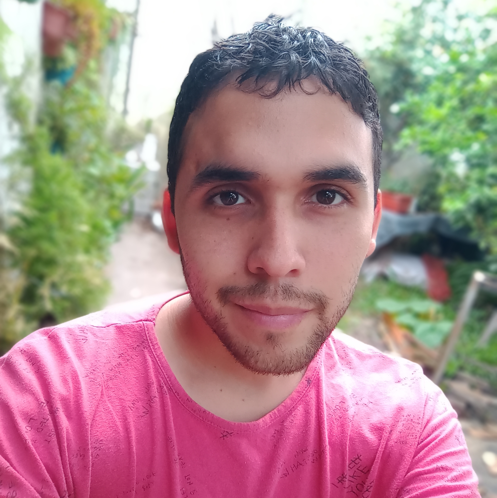

<section id="section-class">
    <div class="row about-class">
        <div class="col-xs-12 col-sm-12 col-md-3 col-lg-3 rounded col-class">
            
        </div>
        <div class="col-xs-12 col-sm-12 col-md-7 col-lg-7 rounded col-class">
            <div class="about-text">
                <h2>Sobre mí</h2>
                <p>Hola, ¿qué tal? Soy Nicolas, y hace mucho inicié en el proceso de aprendizaje de esta materia tan linda como lo es programación.</p>
                <p>Me apasiona la historia, mirar planos y mapas de todo tipo, y me encanta la edición y creación de contenido; pero también guardo cariño a la creación y edición de códigos para diseño web. Por ello y por tantos motivos más, quisiera formarme profesionalmente como Programador Full-Stack, concluir la capacitación y experiencia correspondientes, y apuntar a ramas más específicas para servir en cada proyecto que se me cruce en el trabajo formal.</p>
            </div>
        </div>
    </div>
</section>
